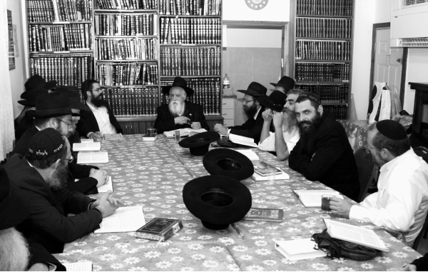

Like a Father to a Son
“My first yechidus with the Rebbe lasted nearly thirty-five minutes, and he showed an interest in me like a father to a son.” He began his search secluded in the forests of Australia, eventually making his way to the Chabad shul in Melbourne. He now resides in the Holy City of Tzfas, after establishing a generation of baalei t’shuva at Yeshivas “Ohr T’mimim” in Kfar Chabad. He recently closed an amazing circle in his life, as two letters from the Rebbe arrived at his new home, decades (!) after they had been written. A fascinating talk with the chassidic gaon, Rabbi Shneur Zalman Gafni.
Translated by Michoel Leib Dobry

On the porch of his home facing the breathtaking view of the Galilee hills, the clear mountain air and the strong smell of pine permeate the atmosphere. There is a pastoral calm everywhere. In this peaceful setting, I sat with Rabbi Shneur Zalman Gafni, until recently the rosh yeshiva of “Ohr T’mimim” in Kfar Chabad and the mashpia of the Chabad community in B’nei Brak. Last month, he moved to the kabbalistic city of Tzfas – a dramatic and perhaps brave step after living for decades in B’nei Brak.
The Gafni family took up residence in “Neve Oranim,” Tzfas’ most remote northern neighborhood. Yet, when you visit their home, you can feel the chassidishkait – like a breath of fresh air.
Three days a week, he spends time in the kollel founded by his son, Rabbi Yosef Yitzchak Nasanel Gafni, delivering classes in chassidus. He also maintains regular contact with his hundreds of students spread throughout the globe, including in Tzfas itself. “I have always loved Tzfas,” he confessed at the start of our interview. “When I arrived in Eretz Yisroel after the Six-Day War, I was already making frequent visits to the Old City of Tzfas.”
Rabbi Gafni shared with me the fact that he would daven Shacharis in the Tzemach Tzedek Synagogue in Tzfas’ Old City, which the Rebbe’s shluchim renovated shortly before the Yom Kippur War. He felt a sense of spiritual inspiration there. He personally visited the shul before the renovation, and he was well acquainted with the Jew who used to guard the premises due to a miracle that he experienced with the Rebbe’s bracha.
The story accompanying Rabbi Gafni’s move to Tzfas spread like wildfire. We wanted to hear all about it, and we were amazed by the story’s power. As the head of the first Chabad baalei t’shuva yeshiva founded at the Rebbe’s instructions, and who was privileged to bring hundreds and thousands of students to a chassidic way of life, we took the opportunity to ask about those students. We heard about his amazing private audiences with the Rebbe, and were enthralled by the story of his own spiritual journey.
LETTERS FROM HEAVEN…
As we have mentioned, Rabbi Gafni has always had a warm place in his heart for Tzfas. However, his shlichus with the yeshiva in Kfar Chabad kept him in the central part of Eretz Yisroel. “After spending decades in B’nei Brak, we recently decided a make a transition. Naturally, I wrote to the Rebbe, but I must admit that I still had some nagging doubts whether the Rebbe approved of this decision.
“One day, before moving to our new residence, we came to Tzfas to make certain that our home would be ready prior to our arrival. While we were still in the house, one of my former students suddenly appeared at the door.
“Without uttering a word, he opened his case and produced a letter from the Rebbe addressed to me. In the letter, dated the 28th of Iyar 5727, the Rebbe wrote: In reply to the notice of their entering a new home, may it be the Will of Alm-ghty G-d that there should be ‘change your place, change your fortune’ for good and a blessing in material and spiritual matters. At the end of the letter, the Rebbe added in his own handwriting: With blessing for a good preparation, followed by his holy signature.
“My wife and I were astonished as we read the letter. I didn’t even remember receiving this letter, not to mention that I had never seen it before. After we had calmed down a bit, the student, Yifrach Abramov, told us how this letter had come to him. R’ Yifrach today lives in S. Petersburg, Russia, and he had previously been in the United States, where he had met a prominent merchant of Judaica items. This merchant suggested that he purchase several letters from the Rebbe, Melech HaMoshiach, out of his collection of about two hundred.
“R’ Yifrach agreed. When he returned home to S. Petersburg, he went through the letters and discovered to his astonishment that one letter was addressed to the Gafni family in B’nei Brak. Since he had been a student in our yeshiva, he decided that he would board a flight to Eretz Yisroel and surprise us with the letter. He never imagined how much of a surprise this would be and how the letter had come at just the right time.
“It turns out that the Rebbe had sent us this letter after we had written to him about moving into our new apartment in B’nei Brak forty-six years ago! However, the Creator amazingly found the way for the letter to come now. The message was clear: The Rebbe is still at the helm.
“Just a few days later, my former student came knocking at our door again with another letter and another story to tell us. When he decided to read the content of each of the letters, he was surprised to find a letter from 5728, addressed (not to the Gafni family, but) to Mrs. Gafni personally.
“The letter was sent to my wife on the 7th of Adar Sheni 5728. The Rebbe writes: ‘I hereby confirm receipt of her letter, and may it be G-d’s Will that she should bring us good news. We find that the entire month – the month of Adar – is a successful one for matters of the Jewish People, both men and women. Furthermore, in the case of (Adar and) Purim in relation to Chanukah, regarding both of which our Sages, of blessed memory, have said that even they (the women) were at that miracle, at Purim, the Megilla is called by Ester’s name only. In addition, since we have been commanded to increase in joy when Adar comes, and even women are included in the aforementioned, and the commandment of the Torah also means providing strength and possibilities, may it be G-d’s Will that the reasons for true joy shall increase in a most clear and revealed sense and for all those who accompany it.’
“We were overcome with emotion. We moved into our new home in Tzfas at the beginning of Adar, but the Rebbe didn’t just settle for a letter on our entry into a new home. He also sent a letter to my wife, telling her that the move had to be done with joy. The Rebbe wrote these two letters many years ago, yet the Creator of the Universe made certain that they arrived at just the right time.”
THE FULFILLMENT OF A PROPHETIC UTTERANCE
Noticing my amazement, Rabbi Gafni proceeded to tell me another story that he discloses for the first time, illustrating the Rebbe’s great prophetic vision.
“Since moving to Tzfas, I go twice a week to my son’s kollel, where I give over shiurim and study with the avreichim. Up until now, I had been accustomed to teaching students who were taking their first steps into the world of Torah and mitzvah observance. Today, my avoda is with avreichim who have already learned a lot of Gemara and are expert in Halacha and chassidus.
“One day when I was sitting in kollel, I recalled an amazing incident that took place on Simchas Torah 5732 during Hakafos in 770. As we know, the Rebbe was always honored with the first and last hakafa. Dealing with the thousands of Chassidim filling every corner of Beis Chayeinu was a special committee – Vaad HaMesadrim. Their job was to make a passageway for the Rebbe from his platform to the center of the shul. That year, I was standing near the bima, and as the Rebbe came down the steps, I found that I was the first person he encountered as he descended.
“I’ll never forget that smile conveying a tremendous inner joy. The Rebbe passed by while holding the small Torah scroll. He turned to me and said something in Yiddish, but I couldn’t hear due to all the great noise and tumult created by the situation at hand. A few seconds later, after the Rebbe passed, a good friend of mine asked me: ‘Did you hear what the Rebbe said to you?’ When I told him that I hadn’t, he repeated the Rebbe’s words in Yiddish, and then translated them into English. The Rebbe said: ‘Zahl zain a simcha far dem gantzen kollel’ – There should be joy for the whole kollel. At the time, I didn’t understand what the Rebbe meant. I was a rosh yeshiva for baalei t’shuva, not a rosh kollel…
“For many years afterwards, the whole episode seemed rather mystifying. Yet, as Chassidim, we know that every word the Rebbe utters is absolutely precise and measured. Now, with our move to Tzfas, when I started working in my son’s kollel, I realized that the Rebbe was talking about these times. He foresaw everything from afar, as the past, present, and future lies before him…
FROM SECLUSION IN THE AUSTRALIAN FORESTS TO YIDDISHKAIT
Rabbi Gafni’s story is indeed a thrilling one. He was born in Melbourne, Australia, before the outbreak of the Second World War. He chooses not to state the exact year of his birth. When he was still a young boy, his family moved from the big city to live in one of the surrounding villages. His love of nature and the mountains had already started to develop – and it continues to this very day. He was always looking for depth and meaning, and these feelings were quite evident when he began his studies at the University of Melbourne.
“At the age of fifteen, I was already learning in university. Before then, I was a member in a group of young anarchists, the type that rebelled against all normative social principles. Such people stubbornly go against the grain as they maintain a strong desire to implement their ideas of truth, justice, and honesty. I can only say that in contrast to our image in the eyes of outsiders, our concern for our fellowman was tremendous. There was much goodness and kindness among us.
“I studied philosophy and social sciences, not the more technical subjects. During these studies, we created a kind of socialistic pact in defiance of the Creator. We rejected everything. The world was beginning to rehabilitate itself from the destruction of the Second World War, and there was much confusion. The group proposed ideas to improve society, and in so doing, ourselves as well. However, every time that it appeared that we had found the exact formula, I proved that it was far from complete. I secluded myself for a lengthy period of time in a shed in the thick Australian forests. The only one who cared about me and understood my heart was my mother, while everyone else thought that I had lost my mind.
“During this seclusion, some amazing incidents of Divine Providence took place that made it clear to me that there must be a Master to this world. Coming to this realization shattered everything I had previously believed.
“Around this time, I had become acquainted with a young Jewish man who helped me to reach the path of traditional Judaism. However, he was not very enthusiastic about the Torah lifestyle, and when I wanted to take some meaningful steps in this direction, the connection between us was severed. Yet, I saw this as a clear sign of Divine Providence. I started reading numerous books on Judaism, and I quickly internalized that if there is truth in the world, it would be found in the teachings of Yiddishkait.
“At a certain point, I began looking for a Jewish leader who would instruct me in the path of truth. This led me to a wonderful Jew who served as a rav in a synagogue – Rabbi Yitzchak Schlesinger. He was a Holocaust survivor who had lost his entire family during the war. He made his way to Australia, remarried, and despite what he had gone through, remained steadfast in his faith. I subsequently worked out all the nagging doubts and questions that had been disturbing me. This splendid Jew realized all the deep and complex travails of my soul, and during one meeting between us, he said quite simply, ‘Look, I have given you everything I know. If you want greater depth and substance, turn to the Lubavitcher Chassidim.’
“Although I didn’t know anything about Lubavitch, he sent me to the mashpia, Rabbi Zalman Serebryanski. The first meeting between us took place at the Chabad shul. When I came in, I saw R’ Zalman sitting nearby and studying chassidus with two people. He learned in English mixed with Yiddish, and I listened from the side. I could hear how he explained chassidic concepts, and I felt that I had come to the truth. He had a good heart. He sat with me for many long hours, speaking with me with a uniquely patient style. He didn’t only understand me, he also understood the very deep conflicts of my troubled soul. Over a period of time, I established contact with other chassidim, such as Rabbi Abba Pliskin, Rabbi Yitzchak Dovid Groner, Rabbi Nachum Zalman Gurevitch and his family, and Rabbi Shmuel Betzalel Altheus.
“What really got me into Lubavitch was the fact that they piously fulfill everything that they learn. All of them, especially Rabbi Serebryanski, were a living example of this dedication. When I was in university, I met professors who could speak about one philosophy or another with great enthusiasm, but their actions belied their words. These Chassidim, in contrast, practiced what they preached. They spoke about Ahavas Yisroel and practiced it. They discussed the avoda of t’filla, and that’s how they davened. These Chassidim put aside their own lives for the purpose of helping another Jew, and this captivated my heart. I felt that this was also how I wanted to live my life.”
HIS FIRST ENCOUNTER WITH THE REBBE
“One day, someone from Anash asked me why I haven’t written to the Rebbe. I was twenty-three years old at the time, and I decided that I had nothing to lose. I sat down and wrote a long correspondence – twenty-one pages in all – explaining my entire philosophy. Chassidim who saw the letter said that I had to shorten it, but I decided to include everything. When I sent the letter, I said to myself: It doesn’t make any difference – I know that the Rebbe is extremely busy. If he replies, all well and good. However, if I don’t get an answer, I’ll understand that it’s because he’s simply very preoccupied, and I’ll have no complaints towards him.
“Much time passed, and I still hadn’t received an answer. In the meantime, I continued to hear about the Rebbe and learn his teachings.
“After the entire process of kiruv, the long awaited day had come for me to bring it to a successful conclusion. This too happened in a most amazing fashion – a story unto itself. Among those rabbanim who were involved in this process was Rabbi Kaplinsky, another Holocaust survivor who had great love for his fellow Jews. During this time, Rabbi Mordechai Perlov was in Australia, serving as the rav of the Chabad community, and he suggested that it would be appropriate to make a seudas mitzvah.
“This is what I did. The entire local Anash community, along with other friends, came to the festive meal. I was a young bachur, and it was very moving and exciting to sit among all the rabbanim. Each of them gave a speech, and I also said something in honor of the occasion. Suddenly, in the midst of all the joy and singing, I saw someone standing at the entrance, asking people something. It caused a bit of a commotion, and I didn’t know what was going on. After a few moments, I was given a sealed envelope, and I saw that it was a letter from the Rebbe. I almost fainted from shock. Rabbi Zalman Serebryanski was sitting near me, and when he saw the letter, he too was overcome with emotion.
“It turns out that the Rebbe’s secretariat had misplaced my address. However, when they realized from my letter that I had a connection with Anash in Melbourne, they sent the Rebbe’s reply to the yeshiva offices. The letter reached me at exactly the right moment – approximately a year and a half after I had written my lengthy message, and on the very day I had completed my kiruv process. As I still had to say my own d’var Torah, and due to all the excitement and emotion, I didn’t have a chance to go over the Rebbe’s letter in depth. Among the things brought in this letter, written in English, the Rebbe said that it would be appropriate for me to return to university.
“The Rebbe touched upon several points that I had mentioned in my letter, and he explained the Torah position towards these points. The Rebbe also noted that he was very happy to read that I was now among Lubavitcher Chassidim, and I had surely learned and understood how this is binding, etc. At the conclusion of the letter, the Rebbe gave a bracha for success, adding that he expects to hear from me in the future.
“In 5722, I wanted to leave Australia and go to another country with a larger Jewish community. I wrote to the Rebbe that I was considering a move to England or the United States, but a response was not forthcoming. Around this time, Rabbi Nachum Zalman Gurevitch of Melbourne went in for a yechidus, and the Rebbe inquired, ‘What’s happening with Gafni?’ Rabbi Gurevitch told the Rebbe what he knew, and the Rebbe replied: ‘I already wrote to him that he should travel to Eretz Yisroel.’ The Rebbe had apparently sent me a letter, but it failed to arrive.
“As soon as I heard about this, I did as the Rebbe had instructed. I emigrated to Eretz Yisroel, settling in B’nei Brak, as per the suggestion of my mashpia, Rabbi Serebryanski. He took the opportunity to ask me to send regards to his good friend, Rabbi Nachum Goldschmidt, with whom I soon established a warm and close relationship. We would periodically take walks together, and he would ask me about my life and offer some valuable advice. He was a Jew of unique quality: a Torah scholar of great intellect, who also gave each person an opportunity to express himself.
“In 5724, I met my future wife, and after our wedding, we established our residence in B’nei Brak.
“The first time I came to the Rebbe was in Elul 5726. The truth is that I had wanted to make this trip a year and a half earlier – for Pesach 5725. Naturally, I wrote to the Rebbe first about my wish to celebrate the Festival of Freedom in 770. Within a few days, I had a reply from the Rebbe in the form of his general pre-Pesach letter with the following added in the Rebbe’s holy handwriting: ‘It is a well-known custom among all Jews that for the Pesach holiday, and particularly on the Seder night, the entire family gathers together, especially the head of the family. Furthermore, it is also known that it is difficult to be as stringent as we would like in matters pertaining to Pesach when we are in other people’s homes. Therefore, there is no point whatsoever in his traveling here.’
“Of course, after an answer like that, I cancelled my plans. However, the feeling of longing continued, and I eventually made the trip for Tishrei 5727. Between Rosh Hashanah and Yom Kippur I had my first yechidus with the Rebbe, which was also the longest one I ever had – lasting nearly thirty-five minutes. The yechidus concentrated primarily, if not solely, on how I was managing in my new environment in Eretz Yisroel. The Rebbe related to this matter at great length, literally as a father shows concern for his son. The Rebbe also dealt with matters of parnasa and employment. With regard to parnasa, the Rebbe noted my proficiency in the English language, even praising my grammar skills. ‘And why shouldn’t this be the basis of your livelihood?’ the Rebbe asked.
“At a certain point, without my raising the subject, the Rebbe began to speak about the great importance of giving over the teachings of chassidus in public. He added by explaining how ‘one must strive that they should be understood by all those listening, such that they can go home and even give them over to the members of their household.’ To be perfectly honest, I was quite surprised and startled. In response, I told the Rebbe that I was still a young man, I had not been raised in a Torah environment, and had only recently accepted the yoke of mitzvos. As a result, I dared to claim that I wouldn’t feel so comfortable saying chassidus in public, and it would perhaps be preferable if I didn’t take this on.
“However, the Rebbe did not accept my arguments. He replied that if there’s someone who can say chassidus publicly, he must do so and people must listen, as it has long been said, ‘Accept the truth from those who say it.’ The Rebbe added that the Alter Rebbe writes in his preface to the Tanya against those who place their hands over their mouths, conducting themselves with a false expression of humility. We must therefore take extra care not to keep matters of goodness from reaching our fellow Jews.
RABBI GAFNI KINDLES A LIGHT FOR THE T’MIMIM
As mentioned earlier, before Rabbi Gafni emigrated to Eretz Yisroel, the Rebbe had urged him to complete his university studies. Even after his arrival in the Holy Land, the Rebbe had suggested this in his first ‘yechidus,’ noting that there was a college near B’nei Brak that he should inquire about. “When I returned to Eretz HaKodesh, I went to Bar-Ilan University, located near B’nei Brak. I met with one of the faculty professors there who had heard about my record, and he suggested that I learn Talmud, perhaps even combining this with another field of study. I eventually began a discussion with some other staff members, but unfortunately it did not produce any desirable results. I realized that this was not the place for me.
“I returned home and wrote about this to the Rebbe. At the end of the letter, I alluded to the Rebbe that I deeply regretted the fact that I was not doing what the Rebbe wanted. Sometime later, I received a reply from the Rebbe, stating that in light of what I had heard there, ‘it is both clear and understood that I am hesitant about this.’ The Rebbe later added that I have no reason to worry ch”v that I’m not listening to his voice, concluding that salvation will come from somewhere else. I realized that I would have to sit tight and wait. Shortly thereafter, I received an offer to teach in a yeshiva for English-speaking baalei t’shuva. This offer was in the manner of ‘an arousal from Above,’ i.e., from the Rebbe, Melech HaMoshiach himself. Here is what happened:
“It was shortly after the Six-Day War. Both Eretz Yisroel and the world at-large were experiencing a great Jewish reawakening. One day, several young English-speaking Jews came to visit the yeshiva in Kfar Chabad. They said that they had heard how Chabad bring Jews closer to Yiddishkait, and they wanted to learn more about Jewish teachings and traditions. The yeshiva administration didn’t know what to do with this group, since there was no appropriate framework for them. Shortly before Rosh Hashanah 5729, then-rosh yeshiva Rabbi Nachum Trebnik traveled to the Rebbe. When he went in for yechidus, he raised this issue and asked what he should do with these young people. The Rebbe said that they had to establish a framework for them, making certain that someone can properly teach them. Then, the Rebbe mentioned my name, saying to Rabbi Trebnik that he should tell me that if it’s not too difficult for me, he (the Rebbe) suggests that I should accept the responsibility. When Rabbi Trebnik returned to Eretz Yisroel, he approached me with this proposal.
“At first, I didn’t understand why the Rebbe said this as a suggestion, and not a command. I’ll never forget what Rabbi Meir Tzvi Gruzman of the Yeshivas Tomchei T’mimim – Kfar Chabad administration said: ‘A suggestion is far greater than a command.’ He explained that the Rebbe’s suggestion was more loftily rooted than his order or instruction, similar to the difference as elucidated in chassidus between something ‘obligatory’ and something ‘optional.’ They explained that the Rebbe essentially wants me to do this willingly and not because I had been ordered to do so.
“The yeshiva opened with six or seven bachurim, and a short while later, several more young men joined the program. Working with these young people was no easy task. I gave over classes in both chassidus and nigleh. I made farbrengens with the bachurim, and I also tended to their material concerns. I served as their sounding board – listening to them, speaking with them, while providing encouragement and understanding with the utmost sensitivity. None of this would have been possible without the constant strength of the Rebbe.
“With the passage of time, Rabbi Chaim Ze’ev HaLevi a”h Steinbach joined the faculty, followed some years later by Rabbi Tuvia Bolton, who remains as the yeshiva’s living spirit to this day.
“Already in the yeshiva’s infancy, a series of correspondence with the Rebbe had commenced regarding how to conduct administrative matters. Literally like a father, the Rebbe dealt with every detail. In practical terms, no one could have possibly dreamed of establishing a baalei t’shuva program without the Rebbe, and especially one affiliated with Yeshivas Tomchei T’mimim.
“In Tishrei 5730, I was again privileged to travel to the Rebbe. During the ‘yechidus,’ the Rebbe took considerable interest in the bachurim and my daily schedule. I complained that in the past, I could daven at length and had a precise schedule of Torah study. Now, however, my day is totally occupied with giving shiurim and holding private discussions with the students.
“I’ll never forget that ‘yechidus.’ The Rebbe spoke at length about the obligation for complete devotion to the students. Afterwards, he stopped speaking for a moment. I thought that after such a ringing declaration, the Rebbe would at least release me from the need for lengthy davening. However, I was quickly proven wrong: The Rebbe said that I must find a way to continue in the avoda of t’filla without compromise, despite all my other activities…
“In 5733, shortly before the outbreak of the Yom Kippur War, I had another ‘yechidus’ with the Rebbe, and I raised an issue that we had encountered with the bachurim. The yeshiva’s reputation was spreading everywhere, and many new students were coming to learn in our program. However, this created a problem: We were learning in the yeshiva’s main ‘zal,’ and these brand new baalei t’shuva often came wearing unconventional attire, and they didn’t always conduct themselves in a chassidic manner. There were those who expressed deep dissatisfaction with this situation. I suggested that perhaps we should leave the ‘zal’ and erect a separate study hall.
“The Rebbe rejected this proposal, stating that the whole purpose of establishing the baal t’shuva program was that it should be an integral part of ‘Tomchei T’mimim.’ He suggested that the program can accept those who have already chosen the path of Lubavitch, or at least those who are heading in that direction. This will make it much easier to influence them regarding their wardrobe. The Rebbe discussed in great detail about how best to deal with the problem. The Rebbe also asserted that the yeshiva’s main objective was to raise young Jewish men as Chassidim. ‘This will be the beauty of Tomchei T’mimim,’ he declared.
“Towards the end of the yechidus, I recalled several personal matters, and the Rebbe replied to each of them. When I felt that the time had come for me to leave the holy chamber, the Rebbe again began to speak about the yeshiva. He said that if they would do everything we had discussed, this would be the true fulfillment of ‘Tomchei T’mimim.’ In all honesty, ‘I was in the clouds’ as I heard such unusual expressions: The fulfillment of ‘Tomchei T’mimim’ would be achieved through our yeshiva. The Rebbe sharpened our responsibility towards those bachurim who came from the outside.
“In 5735, there was a situation where the yeshiva had very few students, and I wrote to the Rebbe about it. The Rebbe’s reply: ‘G-d Alm-ghty will widen their border with good students in both quantity and quality. I will mention it at the Tziyon.’ Several days after receiving this answer, more students began to come from a variety of places. The yeshiva soon had its largest number of bachurim since its inception… I saw clearly how the Rebbe’s bracha had been realized. The following year, 5736, I was privileged to have another ‘yechidus.’ There were serious problems with the army and various other constraints, and I alluded to the possibility that I would have to leave the yeshiva and seek a position overseas. The Rebbe looked at me with astonishment, and said that I must continue in my holy work.
“During this period, the Rebbe spoke frequently about the concept of t’shuva. In his farbrengen on Vav Tishrei 5736, he said that t’shuva and spiritual avoda must be done with joy. The Rebbe expanded upon this point in my yechidus: ‘I said in the sicha that everything must be instilled with joy, and you must do everything with joy.’ Obviously, the whole idea of leaving Eretz Yisroel was ruled out immediately.
“I was privileged to have yet another yechidus later that year. Around this time, Litvishe baalei t’shuva yeshivos, such as ‘Ohr Sameiach’ and ‘Aish HaTorah’, began to emerge. Their massive publicity campaigns and other media activities had brought numerous students knocking at their doors. During the yechidus, I raised this issue, adding that many bachurim, who had begun their kiruv process in Lubavitch, had moved on to study in these yeshivos. The Rebbe replied: ‘It was said to the administration of this yeshiva, and let alone to [the administration] of Tomchei T’mimim, ‘Raise many students.’ I realized what the Rebbe meant: It was forbidden for me to sit by idly and hope that more students will come. I must take action. As a result, we started various publicity activities and encouraged older students to bring younger recruits to the yeshiva.
“We went through many interesting periods at the yeshiva, encountering numerous successes in recent years. We frequently wrote to the Rebbe via Igros Kodesh and we were privileged to receive encouraging answers.”
THE “FIFTH SON” IN OUR GENERATION
It is a known fact that a mashpia never abandons his flock. Thus, while Rabbi Gafni did leave the yeshiva and no longer lives in close proximity to its main activities, our interview was constantly being interrupted by phone calls from students in need of their rav’s advice. In addition to the shiurim in Tzfas, Rabbi Gafni holds classes in chassidus via telephone with his students and devotees, in Eretz Yisroel and the Diaspora.
In recognition of the recent celebration of Yud-Alef Nissan and the Pesach holiday, and the Rebbe’s well-known innovation about “the fifth son,” we asked Rabbi Gafni some questions based on his tremendous experience with this issue:
It may be said that Chabad’s outreach activities constitute one of the Rebbe’s greatest spiritual revolutions. How do you perceive this from your vantage point?
The Rebbe has borne the responsibility for bringing the Redemption in actual deed, and in order to redeem the Jewish People, we must work with all Jews – not just with baalei t’shuva. That means with women, children, and other Jews from a variety of backgrounds. The leader of the seventh generation is the “collector of the camp.” It’s amazing to see how young people came to us with absolutely no knowledge of Judaism and today, many of them hold rabbinical positions throughout the world. All this came only through the strength of the Rebbe.
The Rebbe did not distinguish between baalei t’shuva and Lubavitchers from birth. Each received equal treatment. If anything, the baal t’shuva may have received more. The Rebbe was the personification of “and he brought back many from iniquity.” The Rebbe has conquered the world. I’ll never forget the Rebbe’s sicha in 5732, when he proclaimed the need for world conquest. ‘The world is burning, and we have to put out the fire,’ the Rebbe said at the time. He sent shluchim everywhere to bring Jews closer to their roots. This existed among all our Rebbeim, but with the Rebbe, it was a like a mighty stream.
You turned so many Jews into Chassidim. Yet, these people experienced quite different lifestyles before following the glistening path of t’shuva. How do we preserve this G-dly light and revelation for all times?
Chassidus explains that when a person does t’shuva, the powerful Divine light that he received at the start of his spiritual journey begins to dissipate. Therefore, baalei t’shuva need a mashpia to guide them. This requires even greater force when he leaves the yeshiva and establishes a Jewish home. When he departs the confines of a full-time learning program and becomes a baal ha’bayis, problems are liable to arise stemming from the material world surrounding him. Therefore, we must educate the bachurim to have total bittul towards their mashpia, and the rav who first exposed them to the world of Torah must accompany them, even when it appears that they’re firm and strong, raising their children to follow the path of chassidus.
Shortly before Pesach, I returned from matza baking activities that we hold annually with a group of yeshiva graduates. After the baking, we made a lengthy farbrengen. Many people took part, and this was due to the connection we maintain with them throughout the year. Alumni of our yeshiva know that they can call whenever they wish, and they will receive advice and guidance. They must understand that despite all the chassidus they learned in yeshiva, when a bachur establishes his own home, he can inadvertently start conducting himself according to those habits he followed when he was growing up prior to doing t’shuva. Therefore, it is most important to “provide yourself with a rav.”
If one’s education and overall environment are proper, with G-d’s help, a person can continue his life according to the Rebbe’s teachings. Thus, when he cools off a bit from his initial enthusiasm, this does not represent an extinguishing of the spiritual fire, rather the first steps in implementing the Divine purpose. The ultimate objective is not ‘ratzo’ but ‘shuv.’ While ‘shuv’ seems far more ‘balabatish’ in relation to ‘ratzo’, this is our main goal. Nevertheless, just as every Chassid has to “provide [him]self with a rav,” this is even more important for baalei t’shuva.
Some baalei t’shuva tend to be a bit extremist. How do we counteract this?
This is a mashpia’s duty – to bring the spiritual lights into vessels. A baal t’shuva needs a mashpia to guide him like a biological father. The mashpia needs to take action – not by trampling, but with a lot of love and warmth – and this enables the mashpia to maximize his power of influence. We say in davening: “We are unable to go up, to appear and bow before You.” The question is then asked: Not being able “to go up, to appear” is understood – there’s no Beis HaMikdash. But why can’t we “bow”? Anyone can bend the knee and prostrate in the direction of the Holy of Holies. However, bowing alone is not enough. It can only come after we go up and appear. The avoda with the baal t’shuva is to make the bowing, i.e., bittul to the mashpia, come after going up and seeing, after much love emanating from the mashpia.
How are Chabad baalei t’shuva different from baalei t’shuva in other circles?
Chabad demands far more individual strength. On a recent Shabbos, I was looking after a “brand-new” baal t’shuva. It was Shabbos Mevarchim, and the young man arrived early, said the entire T’hillim, learned chassidus, davened with great sincerity, and afterwards participated in a farbrengen. For anyone who came from a place where they don’t demand anything, this requires a great deal of effort. I could see that he was doing everything with joy. With regard to your question, this is the characteristic of a Chabad baal t’shuva. While there is truth, Chabad chassidus represents the ultimate truth.
The ability to educate in this manner comes only because someone who learns Chabad chassidus doesn’t just see G-dliness, he can feel it as well. Together with this deep inner Torah study, our approach must include speaking about Torah and mitzvos in positive terms. When I farbreng with bachurim about the importance of the bedtime Krias Shma, I don’t try to make them feel uneasy. I speak about the wondrous light that shines within those who are diligent in this matter, contemplating upon each word and making a proper personal accounting.
During the recent Pesach holiday, we revisited the Rebbe’s concept of the “fifth son.” You have surely met many such Jews…
It’s always quite moving to meet a young man who knows nothing about Judaism, and then see his progress after a period of a few months. I have also had the privilege of seeing what’s happening with him several years later. I know many of them today, already ‘zeides’ to grandchildren going in the path of Torah, mitzvos, and chassidus – and I still remember how they first came to us.
Parenthetically speaking, you can have Jews wearing a yarmulke and tzitzis, outwardly appearing like a ‘wise son’ or a ‘simple son,’ but in fact, they are comparable to the ‘fifth son.’ Our job through spreading the wellsprings of chassidus is to take action to neutralize the phenomenon in this world of a “fifth son.”
One final question in conclusion: The fact that the Rebbe chose you specifically to found and administer the yeshiva speaks volumes. Nevertheless, would it not be preferable that this work be done by baalei t’shuva or is this really the job of those raised in chassidic homes?
I think that it’s easier for a baal t’shuva to work with another baal t’shuva, because he went through the same thing and he can identify with his situation and understand him. My mashpia, R’ Zalman Serebryanski, would always say that we have to feel what our fellow Jews are feeling. It’s not enough to know or understand; we must also feel what others are enduring. It is written in Pirkei Avos (2:4): “Do not judge your fellowman until you have stood in his place.” It doesn’t say “until you have understood” or “until you know his place”. You want to judge him? You must first be in his place! However, it is also possible to be a Lubavitcher from birth and still possess the ability to feel your fellowman and his place.
* * *
Several long hours went into putting together this interview, only a portion of which appears here in print due to lack of space. Anyone familiar with Rabbi Gafni knows that he is a knowledgeable Jew of tremendous stature, a learned Chassid who gives considerable thought before answering a question.
However, one of his more fascinating characteristics is his sensitivity and his concern for detail. After the interview in his home had concluded, Rabbi Gafni got up to escort me outside. He waited with me until my taxi had arrived, and then watched as it drove away. Only then did he return to his house. This polite gesture suddenly gave me a greater understanding of the profoundly unique connection between him and his students, who continue to express such great love for him – and with good reason.
Nosson Avrohom. "Like a Father to a Son." Beis Moshiach, no. 876 (April 16, 2013).